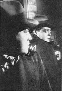

Contents | Features | Reviews | News | Archives | Store |
 |
|
| Movie Credits | Buy It! |
M
Review by Eddie Cockrell
Posted 29 August 1997
|  | Directed by Fritz Lang Starring Peter Lorre, Otto Wernicke, Screenplay by Thea von Harbou Additional story by Paul Falkenberg, Based on an article by Egon Jacobson Restored by The Munich Film Archive Released by Kino International |
A child molester is loose on the streets of a big city, and as the people panic the police seem powerless to apprehend the universally reviled offender.
Sound like last night's news broadcast? It is also the plot of the 1931 German production M, director Fritz Lang's first sound film, his final movie in the by then increasingly unstable Germany between the world wars, and a showcase for the breakout performance of Peter Lorre as the bug-eyed serial killer Hans Beckert. In addition to presenting a chilling story in a style that seems utterly contemporary some 66 years after it was produced, this painstaking restoration by the Munich Film Archive reveals a film that stands as a virtual primer on the subtle uses of sound and silence to create tension, as well as perhaps the most fully realized example of the mature Expressionist filmmaking that was soon to come to a crashing halt as Hitler's ascension to power in 1933 promptly and effectively killed the thriving and exciting German film industry (Lang and Lorre both left that year). Historical value aside, M is also an absorbing and terrifying tale of methodical madness and vividly exacted vengeance.
As the film opens Berlin is already paralyzed with fear over a series of abductions and murders of young girls. In a slow, anguished sequence of disquieting power, young Elsie Beckmann (Inge Landgut) is befriended and killed by a shadowy figure in fedora and topcoat who casually whistles the troll dance theme from Grieg's Peer Gynt as he buys the child sweets and a toy balloon. Throughout her mother is glimpsed preparing a lunch that the girl will never eat and fretting over her tardiness.
The police mobilize under the direction of Inspector Lohmann (Otto Wernicke), but for reasons both moral and fiscal the criminal underworld is equally revulsed by the killing spree ("it's bad for business," someone points out) and organize their own dragnet spearheaded by the sinister, leather-swathed Schranker (Gustaf Gründgens). As the authorities earnestly but ineffectually round up the usual suspects, the thieves' grapevine disrupts Beckert's newest assignation and traps him in a block of offices. In a daring raid of precision and urgency (the police are closing in), the mobsters nearly destroy parts of the building to unearth the craven Beckert, who is promptly condemned to die by a subterranean tribunal before being "rescued" by the authorities. At the fade, a trio of women in mourning beseech unseen witnesses to "keep an even better eye on the children. That's up to you too. That's up to you too."
Fritz Lang (real name: Friedrich Christian Anton Lang) was born the son of an architect in Vienna, and his prolific career as a film director in Germany, France (briefly) and Hollywood includes Destiny (1921), Dr. Mabuse the Gambler (1922), Metropolis (1926), Fury (1936), The Woman in the Window and The Ministry of Fear (both 1944), and The Big Heat (1953). His oeuvre reflects a meticulousness and austerity born of an inclination to design as well as the bleak ideology of Expressionism (he apparently disliked this pigeonholing, although he played Death in the film adaptation of his first screenplay in 1917). M is full of men consulting blueprints, maps and diagrams, and the precise and inevitable sequence that climaxes in the capture of Beckert in the attic storeroom is as clear and steady as a metronome – just as gripping today as it must have been in 1931. Elsewhere, his almost playful use of the medium speaks to his authority as a filmmaker: the separate summit meetings of the police and thieves are intercut with dazzling seamlessness, his overhead shots of children at play and police at work are stunningly realized as pictures and social commentary (the kids are about as productive as the cops), and the blocking of actors and sublime camerawork (by Nosferatu cinematographer Fritz Arno Wagner) are epitomized in a separate scenes where Inspector Lohmann makes the connection between the killer and a brand of cigarette, and the simultaneously hideous and very funny interrogation of a watchman in the office complex.
Yet it is the use and balance of contrapuntal sound and extended, hypernatural sequences of complete silence that are perhaps the most memorable and groundbreaking achievements of M. The early scenes, as Elsie Beckmann's weary mother chides the children for their repetition of a grisly rhyme inspired by the killer and later calls out her mournful "Elllsssiiieee!" as the girl is being murdered in the bushes, sets a tone of sinister dread that is only intensified as the police noisily round up the recidivous patrons of the underworld hangout Crocodile Club and the surrounding streets and alleys in a totally silent ballet of track and capture that ironically points up their inability to similarly apprehend Beckert. Offscreen sound effects and snippets of dialogue add to a pervading sense of uncertainty. And, in a satisfying twist, the killer is identified by a blind street vendor, who recognizes the distinctive whistle.
Lang's formalist approach to filmmaking remains startlingly fresh today, and his other films are worth seeking out on video (that's also Lang himself as the film director in Godard's Contempt, now in regional re-release).
Moviegoers familiar with Hungarian-born character actor Peter Lorre (born Ladislav Löwenstein) only from his oily turns in The Maltese Falcon and Casablanca, or those jokey Edgar Allan Poe films he costarred in with Vincent Price for Roger Corman (The Raven, anyone?) will find his performance as the porcine pedophile Beckert a major revelation. At once completely believable but pathetically cartoonish, Lorre's virtually silent but expressive performance (Lang did the whistle himself, as Lorre never learned how) culminates in his babbling "confession." "Ghosts pursue me: ghosts of mothers, ghosts of daughters..." he screams, "I can't control this evil thing inside me ... I can't help what I do..." This sequence remains one of the most chilling scenes in movie history, and rightly so.
Originally called Murderer Among Us but shortened to the M scrawled in chalk on Beckert's coat by a young thief when key Nazi Party members complained (legend has it they thought it referred to them), the story is based on one Peter Kurten, who murdered nine people (mostly young women but including one child) over a period of about 15 years in and around Düsseldorf. Identified by a surviving victim when he revisited a crime scene, the psychopath was beheaded the same year the film was released, claiming just before the blade fell that he'd have the thrill of hearing his own head drop into the basket.
The restoration of M presented archivists with challenges not normally associated with the salvage of deteriorated prints or missing scenes. Over the years, sound effects had actually been added to silent sequences, and lines of dialogue had been subtly modified to reinforce the authority of the police. In returning M to the version Lang made, the Munich Film Archive has corrected these and other changes with an addition of roughly seven minutes of previously deleted and/or alternate footage including the original title card, a café scene, the final trial (including the cautionary lines from the grieving women), and bits and pieces that were shaved from existing scenes.
M is essential viewing for those interested in the early development of sound, the lineage of genre filmmaking (Beckert is the grisly inspiration for every Leatherface and Hannibal Lecter clone world cinema has ever conjured) and Lang's own substantial but often overlooked contributions to the art of cinema. Long before the emphasis on sophisticated soundscapes currently so popular in mainstream Hollywood (and the factory-like multiplexes that show them), Lang discovered that a movie's atmosphere could be achieved by subtle discordance, and few films since have achieved the seamless blending of sound and image that is a hallmark of Lang's great and enduring work. Seven should play so well in 2062.
M may be seen currently or soon in Los Angeles, San Francisco, Seattle (an encore run), Atlanta, Pittsburgh, Berkeley, San Diego, Minneapolis, Cleveland, Detroit, Ann Arbor, Providence, Santa Cruz, Hartford, Austin, Durham and Williamsburg. Check your local listings or call your favorite regional art house for further information.
Contents | Features | Reviews | News | Archives | Store
Copyright © 1999 by Nitrate Productions, Inc. All Rights Reserved.